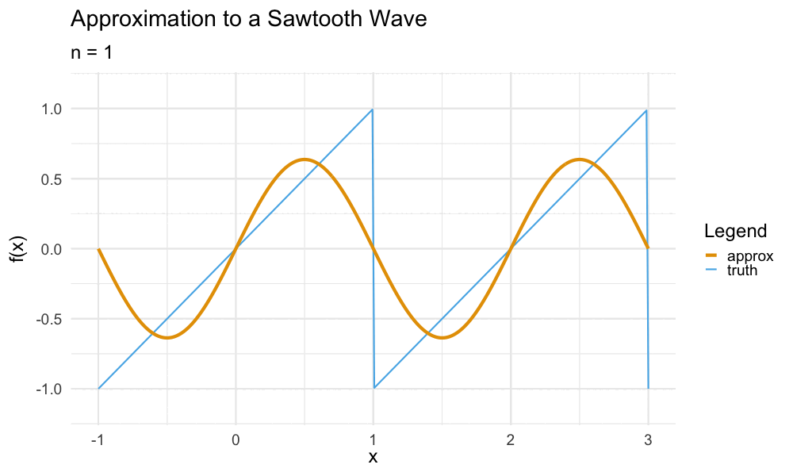
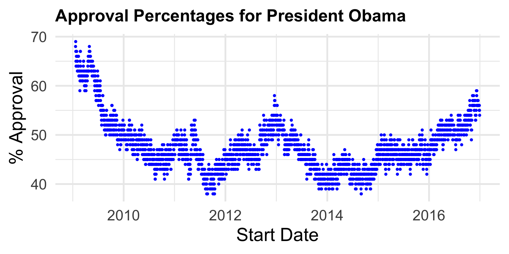
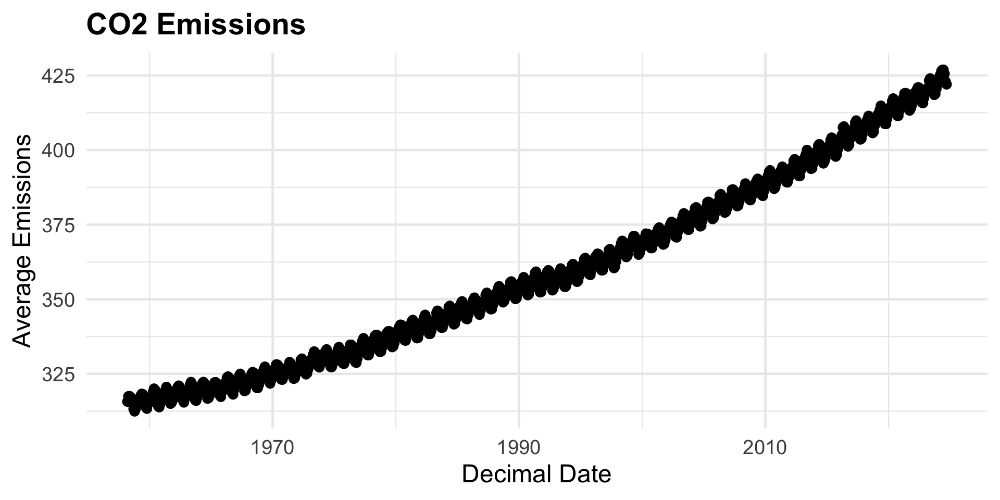
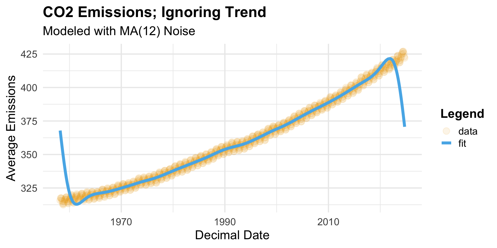
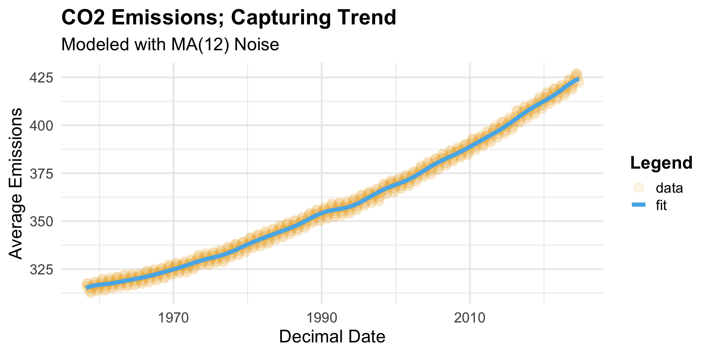

Approval Ratings for President Obama across his two terms in office.
Presidential Approval Ratings
Nonparametric Regression
Model:\(y_t = f(t) + \omega_t\)
\(y_t =\) approval rating on day t
Signal Function\(f(\cdot)\) is to be estimated
Noise Process:\(\omega_t\); commonly assumed to be i.i.d. Gaussian White Noise
A nonparametric regression problem
I.e. can we estimate the true underlying signal function with as few assumptions as possible?
Essentially, boils down to a tradeoff between signal and noise variances
Main Ideas
An Overview of Our Procedure
We leverage two main ideas in our approach:
Utilizing a Bayesian approach (technically, an Empirical Bayes)
Utilizing the spectral domain (Fourier Transforms)
With these two ideas, we are able to reduce the estimation problem to a Generalized Linear Model (GLM).
To ensure we’re all on roughly equal footing, let’s briefly discuss these topics in generality first
Bayesian Estimation
A High-Level Overview
In a typical (frequentist) paradigm, parameters are treated as deterministic (i.e. nonrandom)
Example: \(X_1, X_2, \cdots, X_n \iid \mathcal{N}(\mu, \sigma^2)\) with \(\sigma^2\) known; then µ, the unknown mean, is treated as fixed
To account for variability across samples, we develop estimators (e.g. \(\bar{X}\)) to estimate the “true value” of µ.
The Bayesian framework acknowledges that we are coming into our problem with certain prior beliefs, and, consequently, treats µ as a random variable in itself, following some prespecified prior distribution.
We then look at the posterior distribution\(\pi(\mu \mid X_1, X_2, \cdots, X_n)\), essentially an “updating” of our beliefs in the presence of the data \(X_1, X_2, \cdots, X_n\).
What we see is that the posterior mean is a weighted average of the prior estimate (\(\nu\)) and the frequentist estimator (\(\bar{X}\)), with the weights proportional to the sums of the prior and model variances.
A smaller prior variance (indicating more certainty in our choice of prior) leads to a higher weighting of \(\nu\) over \(\bar{X}\), and vice-versa.
This assumes \(\sigma^2\) to be known; if it were not, we could either assign a hyperprior (pure Bayesian) or estimate it using data (Empirical Bayes)
Presidential Approval Ratings
The Model
Model:\(y_t = f(t) + \omega_t\)
\(y_t =\) approval rating on day t
Signal function \(f(\cdot)\) is to be estimated
Adopting a Bayesian perspective, we assign a prior to the signal function
The prior we use is called a Gaussian Process; think of it as a distribution such that draws from this distributions are functions (as opposed to random vectors).
Prescribed by a mean function and a covariance kernel (akin to \(\mu\) and \(\sigma^2\), respectively)
Noise:White Noise process \(\omega_t \iid \mathcal{N}\)(0, σ2)
Presidential Approval Ratings
The Problem
Note that this model contains three parameters (often called hyperparameters in the Bayesian framework, since they are parameters not of particular interest to us in themselves beyond their link to the signal function).
We adopt an Empirical Bayes framework, opting to estimate these parameters using data (as opposed to imposing further hyperpriors).
A key proposition we make is to convert the estimation problem into the spectral domain.
This is related to the notion of a Fourier Transform
Spectral Domain
Recall that a vector space can be described using a set of basis vectors.
These basis vectors allow any element of the vector space to be expressed as a series of coordinates, with respect to the selected basis vectors.
A function space is essentially an extension of a vector space, where elements are now functions.
Function spaces can be expressed in terms of basis functions, which then allow us to describe functions in term of coordinates wrt. the selected basis functions.
It turns out that most functions can be expressed as some (infinite) combinations of sines and cosines of different periods.
So, we can consider using a collection of sinusoids to form a basis, with coordinates expressed with respect to these sines and cosines.
Fourier Transforms
Intuition
This is, in essence, what the Fourier Transform represents: a decomposition of a function into a superposition of sines and cosines of differing periods.
For example, the Sawtooth Wave\[ f(x) = x - 2 \cdot \mathrm{round}(x / 2) \] admits the following Fourier decomposition: \[ f(x) = \sum_{n=1}^{\infty} \frac{2}{n \pi} (-1)^{n + 1} \sin(n \pi x) \]
Fourier Transforms
Example: Sawtooth Wave

Presidential Approval Ratings
The Model
Model:\(y_t = f(t) + \omega_t\)
\(y_t =\) approval rating on day t
Signal function \(f(\cdot)\) is to be estimated

Let \(\{\eta_k\}_{k \geq 0}\) denote the Fourier coefficients of the signal function and let \(\{\xi_k\}_{k \geq 0}\) denote the Fourier coefficients of the noise process. By standard results, these will be a collection of independent complex-normal random variables: \[\begin{align*}
\eta_k & \stackrel{\mathrm{ind}}{\sim} \mathcal{CN}\left(0, \ v_k \mat{I}_2 \right) \\
\xi_k & \stackrel{\mathrm{ind}}{\sim} \mathcal{CN}\left(0, \ u_k \mat{I}_2 \right)
\end{align*}\]
Given appropriate estimators \(\widehat{\eta}_k\) for \(\eta_k\), we can construct an estimator for the signal function as \[ \widehat{f}(t) = \sum_{k=-\infty}^{\infty} \widehat{\eta}_k e^{-2 \pi i k t / n} \]
Therefore, we’re pretty much back to a normal-normal problem!
For a Matérn-5/2 kernel, \(v_k \propto \tau^2 h \left( 1 + k^2 h^2 \right)^{-3}\)
For White Noise, \(u_k = \frac{\sigma^2}{n}\)
Resolution: Unknown \(\eta_k\) and \(\xi_k\)
Since \(\eta_k\) and \(\xi_k\) appear in \(\widehat{\eta}_k\) only through their sum, we can replace their sum with \(\check{y}_k\), the Discrete Fourier Transform (DFT) of the observed \(y_t\) values.
Approval Ratings for President Obama across his two terms in office. Points represent three-day averages.
The Model
Accounting for Correlated Noise
Better to model \(\omega_t\) as a Moving-Average process of order q: \(\omega_t = \varepsilon_t + \textstyle \sum_{j=1}^{q} \psi_j \varepsilon_{t - j}\) where \(\varepsilon_t \iid \mathcal{N}(0, \ \sigma^2)\)
Obtain the coefficients \(\check{y}_k\) of the Discrete Fourier Transform of the \(y_t\) values, and use this to compute \(\tilde{\theta}_k := \|\check{y}_k\|^2 / 2\) for \(k = 0, \cdots, B\) where \(B = \lfloor (n - 1) / 2 \rfloor\) if \(n\) is odd and \(B = n / 2\) if \(n\) is even.
Identify the bandwidth \(\widehat{h}\) that minimizes the deviance of the following Gamma Generalized Linear Model: \[ \tilde{\theta}_k \sim \mathrm{Exponential}\left[ \gamma_1 h \left( 1 + k^2 h^2 \right)^{-3} + \beta_0 + \sum_{j=1}^{q} \beta_j \cos\left( j \cdot \frac{2 \pi k }{n} \right) \right] \]
Utilizing the optimal bandwidth from step (2) above, refit the Gamma GLM and obtain fitted values \(\widehat{\theta}_k\), \(k = 1, \cdots, B\) for \(\theta_k\). Estimates for \(v_k\) are computed as \[\widehat{v}_k := \widehat{\theta}_k - \sum_{j=0}^{q} \widehat{\beta_j} \cos( 2 \pi j k / n )\]
The Algorithm (cont’d)
Multiply the \(\check{y}_k\) terms from step 1 by weights \[ \widehat{w}_k := \widehat{\left( \frac{v_k}{v_k + u_k} \right)} = \left( \frac{\widehat{v}_k}{\widehat{\theta}_k} \right) \]
Apply the inverse Fourier transform to the weighted coefficients from step (4) above to obtain fitted values \(\hvect{y}\).
Trends
An Overview
Fourier-based methods assume an inherent amount of periodicity in the signal function.
As such, most Fourier-based estimators suffer from “edge effects” where the starting and ending fitted values are constrained to be equal, even if this is not desired.
Our algorithm, admittedly, is no exception, which poses an additional challenge for datasets with a noticeable trend.
As a somewhat “famous” example, we consider the CO2 Emissions recorded at the Mauna Loa observatory in Hawai’i.
CO2 Dataset
Visualization

CO2 Dataset
Initial Fit

Trends
Our Approach
Our current approach is to first remove the linear portion of the trend by way of a simple linear regression, and then apply our algorithm to the resulting residuals.
Admittedly, this induces some heteroskedasticity which must be accounted for.
Preliminary results indicate that the magnitude of this heteroskedasticity is relatively small, though, and can be ignored.
A future direction of research that is of interest to us is finding a more systematic way to handle this heteroskedasticity.
CO2 Dataset
Optimal Fit

Credible Intervals
A Work In Progress
Finally, as a statistician, I would be remiss to not at least mention credible intervals.
We are currently in the process of finalizing our treatment of credible intervals for our predicted signal values \(f(t)\).
A preprint (containing further details of our algorithm and also our work on credible intervals) is expected to be completed in the coming months.
We have results for the white noise case (which show that the variance contributed by parameter estimation is negligible), and are working to extend them to the more general moving-average case.
Conclusion
Summary
In conclusion, we propose an Empirical Bayes estimation procedure for use in models with correlated data, with a Gaussian Process prior.
A key aspect of our estimation procedure is the utilization of the spectral domain to carry out the estimation of necessary hyperparameters.
This allows the hyperparameter estimation to be carried out by way of an Exponential Generalized Linear Regression, which is fast and efficient.
Final fitted values are found by weighting the original spectrum, and inverting the Fourier transform.
In cases where a noticeable trend is present, our algorithm can be applied to the residuals resulting from a Simple Linear Regression.
Conclusion
Future Work
Three main avenues of future work immediately present themselves.
From a computational standpoint, we would like to adopt a slightly more sophisticated procedure for estimating the bandwidth (beyond a simple grid-search).
We would also like to explore the notion of credible intervals as they pertain to our final fitted values; work on this is ongoing.
A quick note: we are also planning on exploring the asymptotics of our algorithm in the coming months.
I would also like to explore whether it is feasible to extend our algorithm to bivariate data (though it is unclear whether this is feasible or not).
Acknowledgments
I am deeply grateful for the tutelage of my advisor, Dr. Andrew Carter, and the other members of my doctoral committee, Dr. Yuedong Wang and Dr. Mengyang Gu
The Presidential Approval Ratings dataset has been accessed through the American Presidency Project at the University of California, Santa Barbara
The CO2 dataset has been accessed through the Global Monitoring Laboratory, a part of the National Oceanic and Atmospheric Administration
This slide deck has been created using Quarto, in the RStudio IDE. Graphics have been produced with the ggplot2 package, with colorblind-friendly Okabe-Ito Palette functionality added through the ggokabeito package.
Slide icons have been sourced from fontawesome, and have been integrated into this slide deck using the fontawesome Quarto Extension.